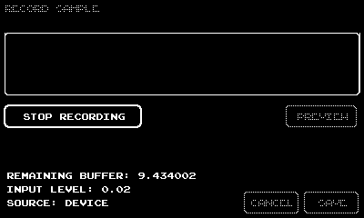

Granular is an experimental 'grain sampler' for Playdate that plays subsamples from a recorded parent sample. It includes various modifiable parameters and effects to change the sound which produces beautiful glitchy ambience that can be used on its own or as a background for other instruments.
Sample output using the built-in 'demo organelle' file:


